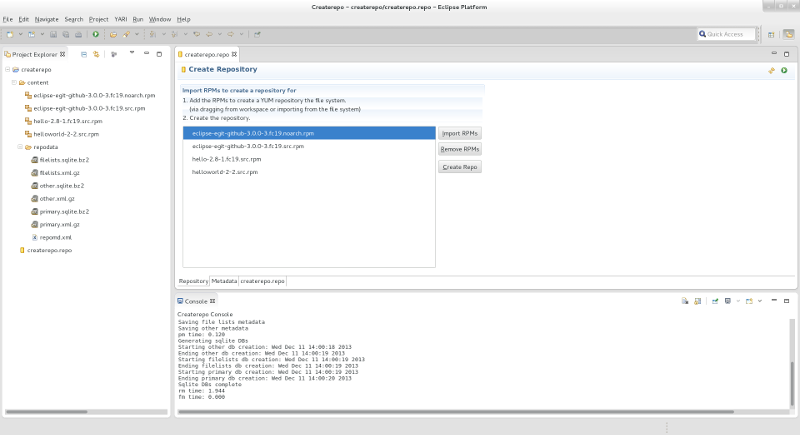
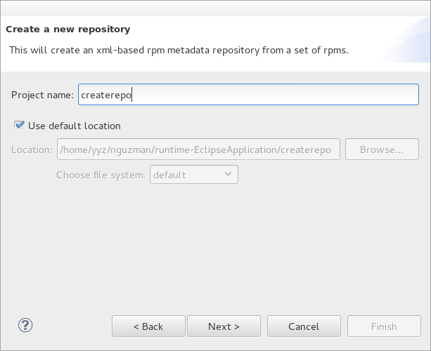
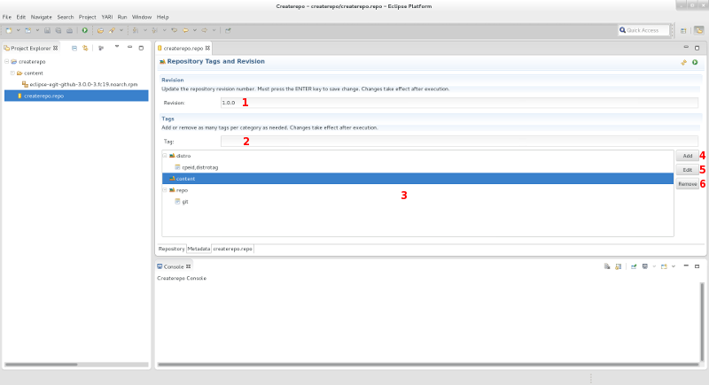
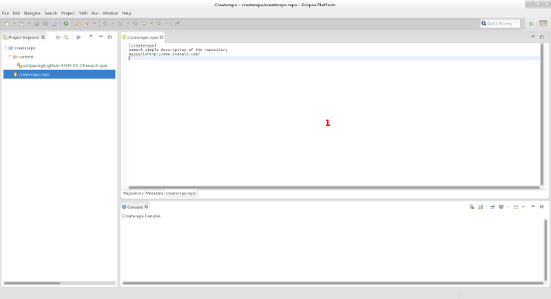

| Createrepo | ||
|---|---|---|
|
|
|
|
| Import src.rpm | Configuring Specfile Editor Settings | |
As mentioned previously, the createrepo tool is used in creating repositories from a set of RPMs. Eclipse allows use of this functionality in a visual and interactive environment.
The following screenshot shows the createrepo tool in action:

To get started, user must first create a Createrepo project via File > New > Other... and selecting Createrepo Wizard under the Createrepo category. You will be provided with a general project creation dialog that allows you to: 1) specify a project name; 2) specify the location in which to save the project.

After specifying the name (and optionally the location), the user may click
Next
which will bring them to the .repo file initialization page:

This page creates the .repo file that allows the repository to be known to yum. There are three mandatory parts that are required to be filled before moving on:
yum repositoryOnce these fields are filled, user can now click
Finish
and the Createrepo project should be initialized with an empty content folder and a .repo file with the same contents as what was filled in the wizard.
There are 3 pages to the Createrepo editor:
This page manages the RPMs that the user will be creating a repository for. It allows the user to choose the RPMs they want to create a repository for and also execute the createrepo command to create the repository.

content folder; in other words, it contains the RPMs that the user will be creating a repository for. The user may also drop RPMs onto this box which would serve the same purpose as the
Import RPMs
button
content foldercreaterepo command in the content folder. This will take command arguments as specified by the user in the
preference pages. The RPM list can be empty when executing
createrepo execution with the --update command switch passed into itThis page manages the repository tags and revision number when the metadata is being generated. All new data placed into this page will be persisted on the next execution.
Similarly to the Repository page, this page also contains the Update and Createrepo buttons which execute the same way.

distro, content, and repo. There can be as many tags as the user specifies, but they must be unique in respect to the tags within the category they belong toThis is a simple text editor that allows the user to modify the .repo file's contents.

.repo file|
|

|
|
| Import src.rpm | Configuring Specfile Editor Settings |